Minabe, Wakayama: things to do, food and stays
Minabe · Wakayama
Minabe
Highlighted on the Wakayama map.

Stay
グランドメルキュール和歌山みなべリゾート＆スパ

Grand Merukyuru Wakayama Minabe Resort & Supa
Resort hotel in Yamauchiometsutomari, Minabe with family-friendly stays.
名湯と紀州の幸を愉しむ宿 朝日楼
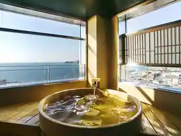
Meito To Kishu No Sachi Wo Tanoshi Mu Yado Asahi Ro
Inn in Hanitaumekeoka, Minabe with a large communal bath.
旅の宿・いく田
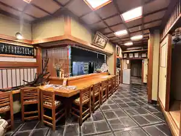
Tabi No Yado Iku Ta
Inn in Hanita, Minabe with family-friendly stays.
紀州路みなべ
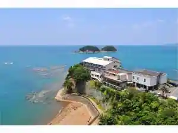
Kishuji Minabe
Inn in Hanita, Minabe with business travelers.
鶴の湯温泉
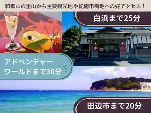
Tsuru No Yu Onsen
Inn at Tsurunoyu Onsen in Kumasegawa, Minabe.
Dining
もとや
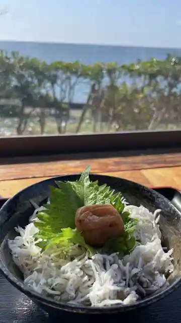
Motoya
カフェ・ド・マンマ

Cafe Do Manma
GRAND MERCURE 和歌山みなべリゾート＆スパ
GRAND MERCURE Wakayama Minabe Resort & Supa
海鮮房 井乃芳
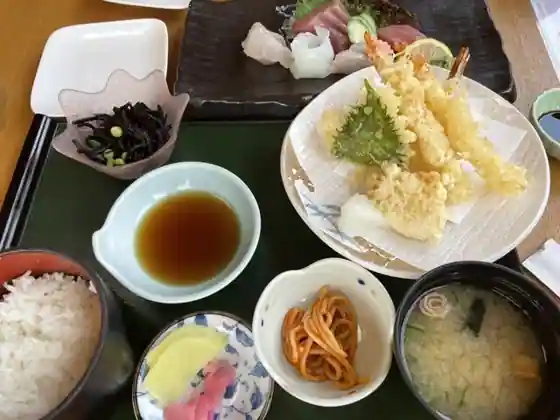
Kaisen Bo I No Ho
かたやま
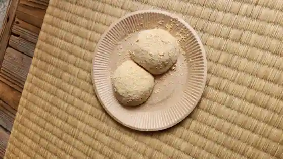
Katayama
高砂食品
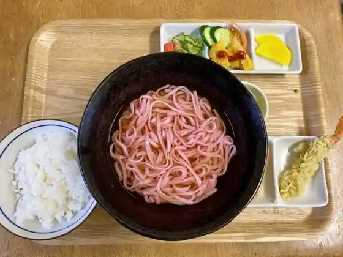
Takasago Shokuhin
朝日楼
Asahi Ro
くーる
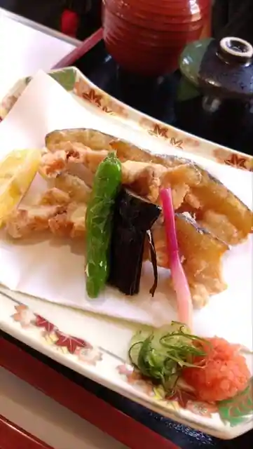
Kuru
道の駅 みなべうめ振興館
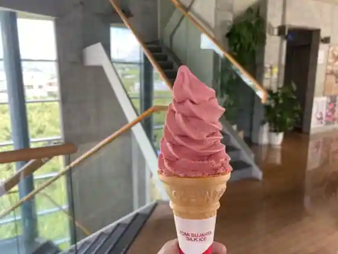
Michi No Eki Minabeume Shinko Kan
酒栄
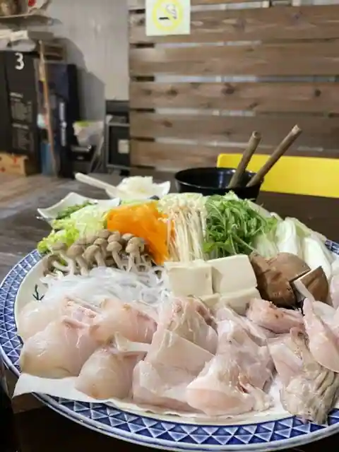
Sake Sakae
酒と魚 更科
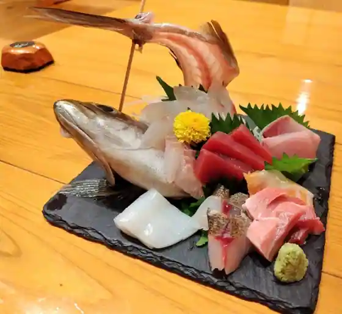
Sake To Sakana Sarashina
紀州梅干館
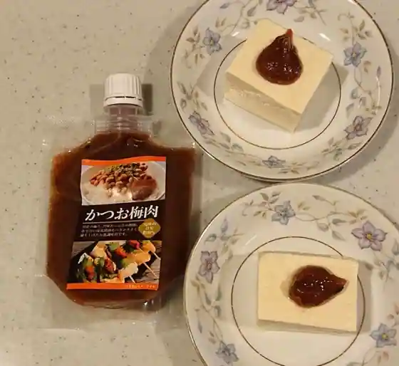
Kishuume Kan Kan
万作
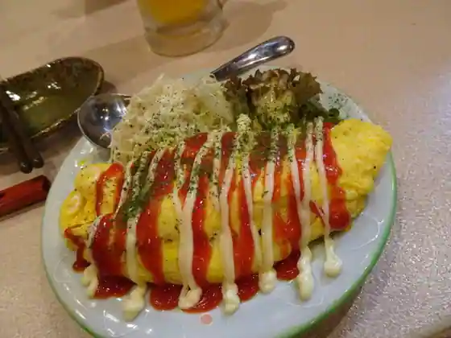
Mansaku
ぷらむ工房
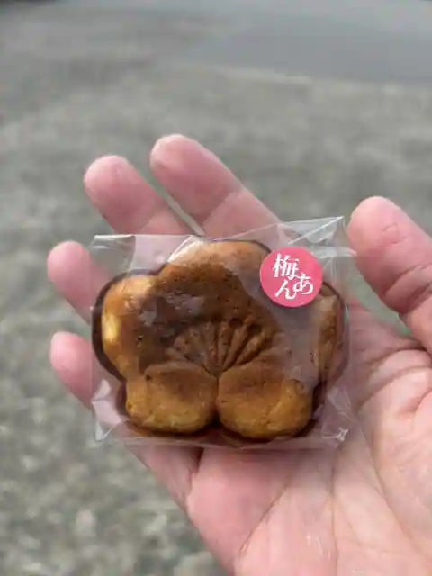
Puramu Kobo
和カフェ ひさ松
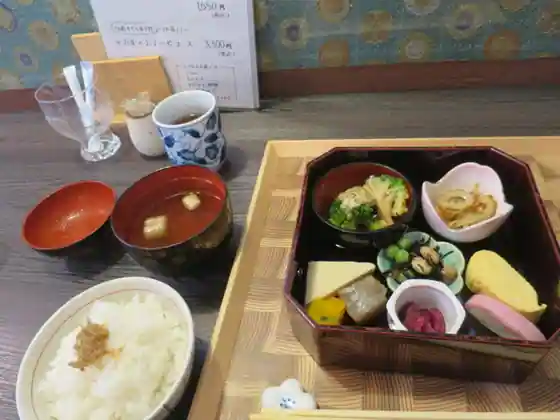
Wa Cafe Hisa Matsu
とりじゅん
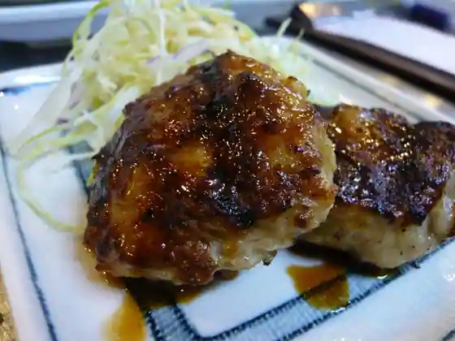
Torijun
熊平の梅 みなべ店
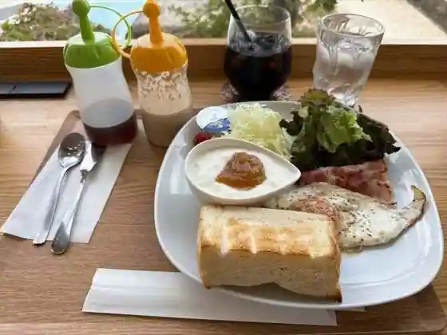
Kuma Taira No Ume Minabe
えびす
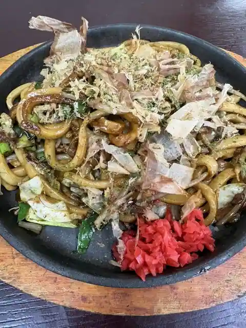
Ebisu
なかた
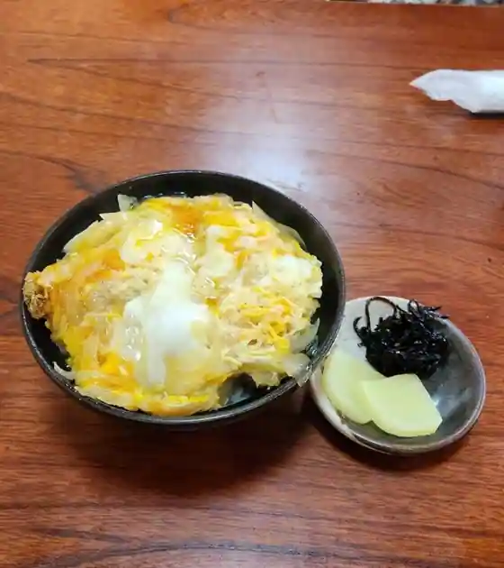
Nakata
キッチン とまり木
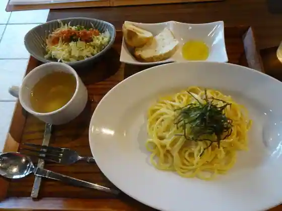
Kitchen Tomari Ki
あいうえお
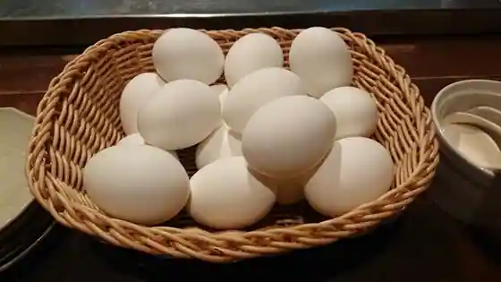
Aiueo
Sights
Roadside Station Minabe Ume Shinko Kan

Suga Shrine
Komoku Tsu Park

Kashima Shrine
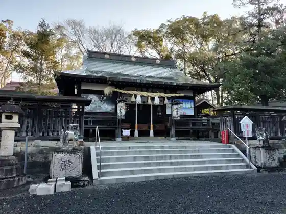